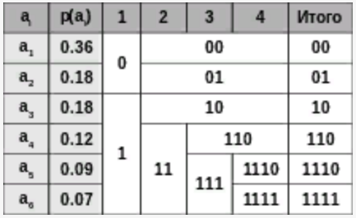

Алгоритм Шеннона-Фано
Алгоритм Шеннона — Фано — один из первых алгоритмов сжатия, который впервые сформулировали американские учёные Клод Шеннон и Роберт Фано. Данный метод сжатия имеет большое сходство с алгоритмом Хаффмана, который появился на несколько лет позже и является логическим продолжением алгоритма Шеннона. Алгоритм использует коды переменной длины: часто встречающийся символ кодируется кодом меньшей длины, редко встречающийся — кодом большей длины. Коды Шеннона — Фано — префиксные, то есть никакое кодовое слово не является префиксом любого другого. Это свойство позволяет однозначно декодировать любую последовательность кодовых слов.

Пример построения кодовой схемы для шести символов a1 - a6 и вероятностей pi Символы первичного алфавита m1 выписывают по убыванию вероятностей. Символы полученного алфавита делят на две части, суммарные вероятности символов которых максимально близки друг другу. В префиксном коде для первой части алфавита присваивается двоичная цифра «0», второй части — «1». Полученные части рекурсивно делятся, и их частям назначаются соответствующие двоичные цифры в префиксном коде. Когда размер подалфавита становится равен нулю или единице, то дальнейшего удлинения префиксного кода для соответствующих ему символов первичного алфавита не происходит, таким образом, алгоритм присваивает различным символам префиксные коды разной длины. На шаге деления алфавита существует неоднозначность, так как разность суммарных вероятностей p(0)-p(1) может быть одинакова для двух вариантов разделения (учитывая, что все символы первичного алфавита имеют вероятность больше нуля).
Код Шеннона — Фано строится с помощью дерева. Построение этого дерева начинается от корня. Всё множество кодируемых элементов соответствует корню дерева (вершине первого уровня). Оно разбивается на два подмножества с примерно одинаковыми суммарными вероятностями. Эти подмножества соответствуют двум вершинам второго уровня, которые соединяются с корнем. Далее каждое из этих подмножеств разбивается на два подмножества с примерно одинаковыми суммарными вероятностями. Им соответствуют вершины третьего уровня. Если подмножество содержит единственный элемент, то ему соответствует концевая вершина кодового дерева; такое подмножество разбиению не подлежит. Подобным образом поступаем до тех пор, пока не получим все концевые вершины. Ветви кодового дерева размечаем символами 1 и 0, как в случае кода Хаффмана.
При построении кода Шеннона — Фано разбиение множества элементов может быть произведено, вообще говоря, несколькими способами. Выбор разбиения на уровне n может ухудшить варианты разбиения на следующем уровне (n + 1) и привести к неоптимальности кода в целом. Другими словами, оптимальное поведение на каждом шаге пути ещё не гарантирует оптимальности всей совокупности действий. Поэтому код Шеннона — Фано не является оптимальным в общем смысле, хотя и дает оптимальные результаты при некоторых распределениях вероятностей. Для одного и того же распределения вероятностей можно построить, вообще говоря, несколько кодов Шеннона — Фано, и все они могут дать различные результаты. Если построить все возможные коды Шеннона — Фано для данного распределения вероятностей, то среди них будут находиться и все коды Хаффмана, то есть оптимальные коды.